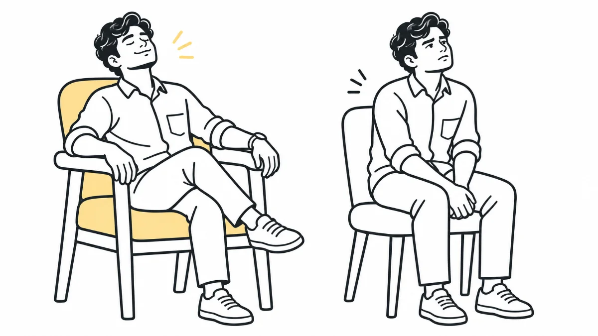

UX ThinkingMindset
UX isn't what you design. It's what people feel when they use it
Nobody taught me UX in a classroom. A badly designed tap did.

My first encounter with the term “UX” (User Experience) was in 2017. I had just completed my MBA and was searching for an HR role. During an interview for a recruiter position at a startup (which eventually became my first job), they explained that they specialised in design recruitment. That was the moment I first heard the word UX.
“Wait… UX? What exactly is that?” That was the very question running through my mind the first time I heard it. The term sounded unfamiliar, almost strange.
A year later, after working as a design recruiter, I decided to switch to design myself. When I told my friends (mostly from HR, Marketing, and Finance backgrounds), almost everyone asked the same question: “UX Designer? What’s that?”
The simplest way I could explain at that time was: “I design applications and websites.”
And trust me, even today, that remains the easiest way to explain what I do to people outside the tech world.
Now, after 5 years of working in this field, reading, and listening to experts, I often ask myself: “Is UX just about designing apps and websites in a design tool?”
The answer is a big NO.
The word itself says it clearly: User Experience. It’s about the experience a user gets while using any product or service.
It could be:
- a cup you drink from
- a chair you sit on
- a car you drive
- a web application you use
or even a service you interact with
I’ll be more comfortable sitting on a chair with armrests than one without. Both chairs serve the same purpose, but one provides a better experience.
That’s UX in action. The designer of the first chair thought about the user, not just the function. And that’s exactly the job of a UX designer.
Now, apply the same principle to digital products. (I’ll let you imagine your own examples. I’m sure you’re smarter than me.)
We often restrict the word UX only to digital products. But real life is full of experiences that teach us about UX.
For example, once I was invited for lunch at a family’s house. After eating, I went to wash my hands. I’m right-handed, and the tap’s handle was also placed on the right side of the basin. To turn it on, I had to stretch my left hand across, because I couldn’t use my right hand (which was oily after eating).
It struck me: “This is such a small thing, but every single day, everyone in this house must be experiencing this inconvenience.”
The design worked. The tap gave water and the basin did its job. But the experience was poor.
That’s UX.
We all come across such examples in our daily life. Some good, some bad. And that’s the point: UX isn’t just about screens. It’s about how people interact, feel, and achieve their goals with any product or service.
So here’s a small exercise for you: think about a “good” or “bad” UX example you’ve noticed in your everyday life.
We have 10 usability heuristics (basic rules of thumb for usable design) to guide us in designing better products. In the upcoming articles, I’ll share how I see these heuristics in real life and how they connect back to digital products.
We are Product or Service designers. And User Experience is the soul of both. Without the right UX, neither products nor services truly work.